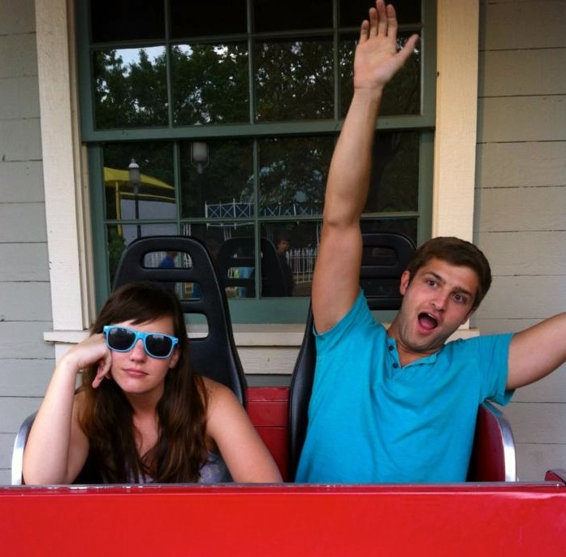

Matthew Knudsen
I used to have a beard, but I was ridiculed, berated and chastised to the point of insanity. I couldn't take it anymore, so I shaved it. I don't want to say it was the worst decision of my life, but it was definitely top 5.
Stuff I Like
I love a good number of things, but to get the most points, I'll probably say that I love my girlfriend, Grace. We've been dating now for nearly five years, four of which were spent at different colleges 1,500 miles away from each other. Long distance has not been the easiest road, but we made it through! She's the best.
Also, she has an adorable little Shih-Tzu named Luna, who's totally not the only reason I'm dating Grace. Would Grace and I not be together if she didn't have Luna? Well, it might take some soul searching, but luckily, we don't need to walk down that road.
Upon reflection, this blurb might not score me that many points after all.
Stuff Maybe Not Everyone Loves About Me
I really enjoy singing. If someone's talking, and they say a word that I know is a part of a song, I will usually just interrupt the conversation to sing a few lines of the song. Or, sometimes, I just like to make up songs about what's going on, desperately hoping that as I'm singing the line I'll find a way to make it rhyme.
Now, when I say I enjoy singing, that does not mean I am good at it. You would think with how often I sing, my voice would have eventually had to start sound less jarring, but you would think incorrectly. So while I may enjoy singing, the people around me usually do not.
Who is this guy?
My name is Matthew, and I'm going to become a web developer. I studied Accounting in college, but one day decided to stop lying to myself and pretending that I liked it. I'm attending Dev Bootcamp San Francisco in January 2014 to learn Ruby on Rails.


© 2013 Some of these pictures were used without permission. Is that bad? Guys?